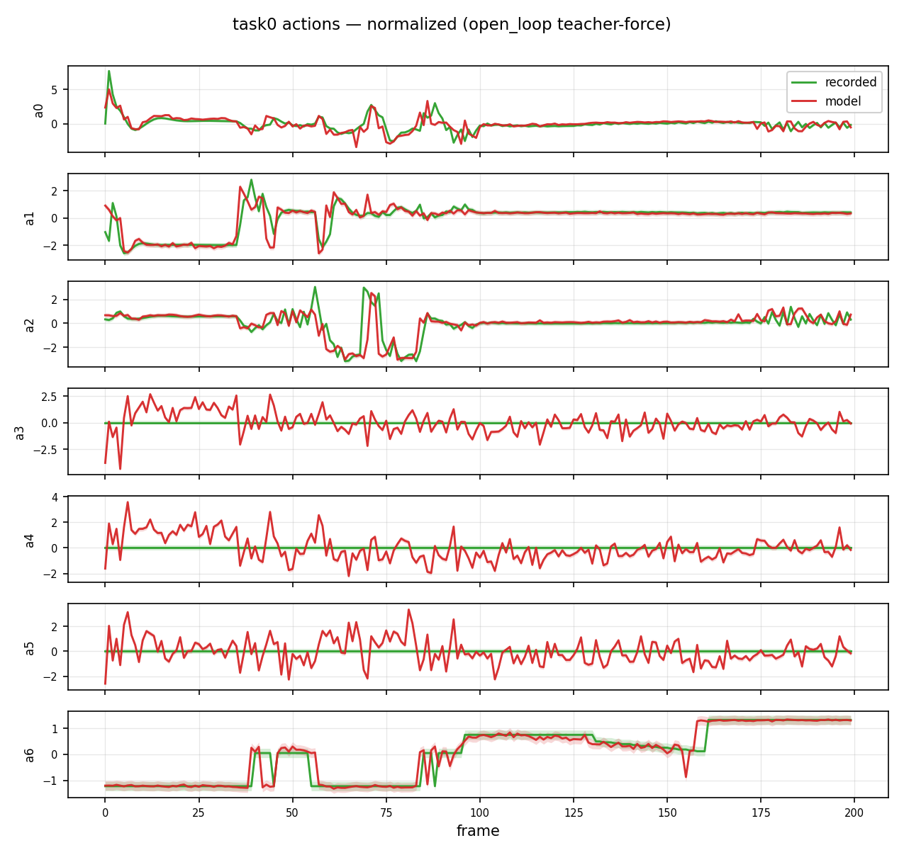
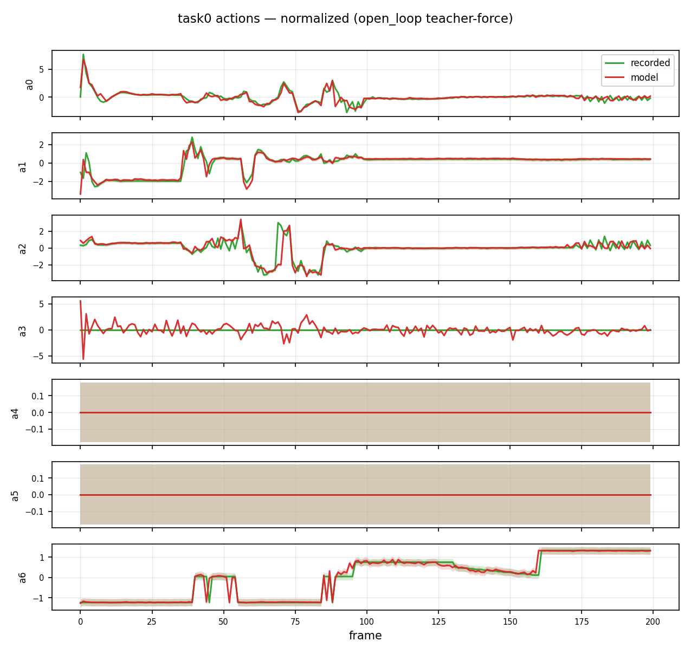
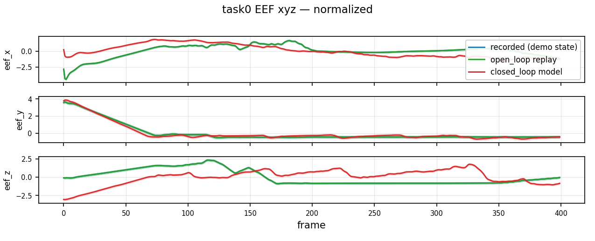
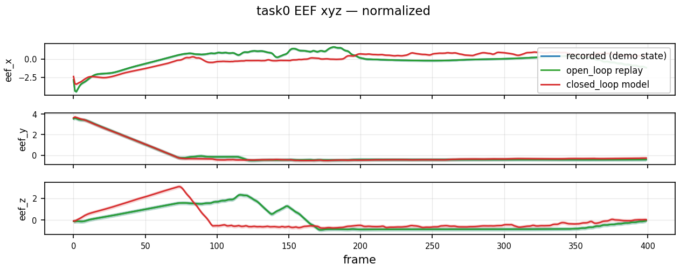
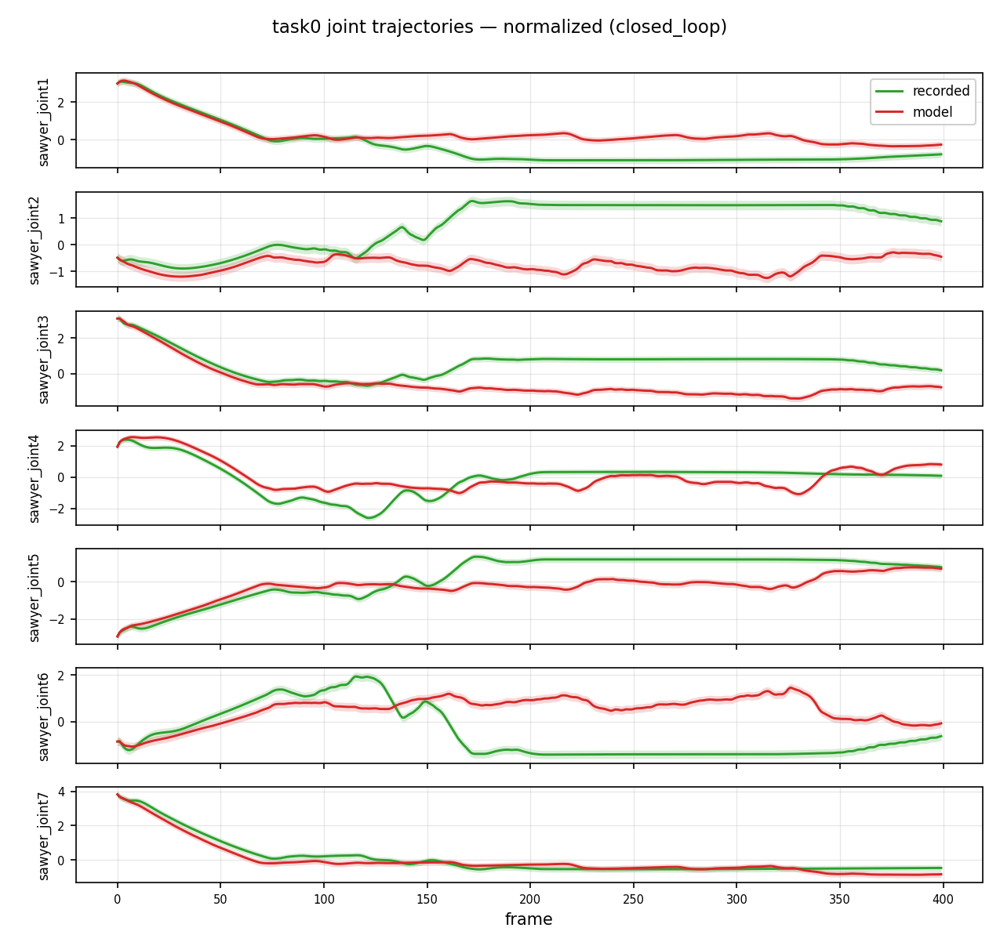
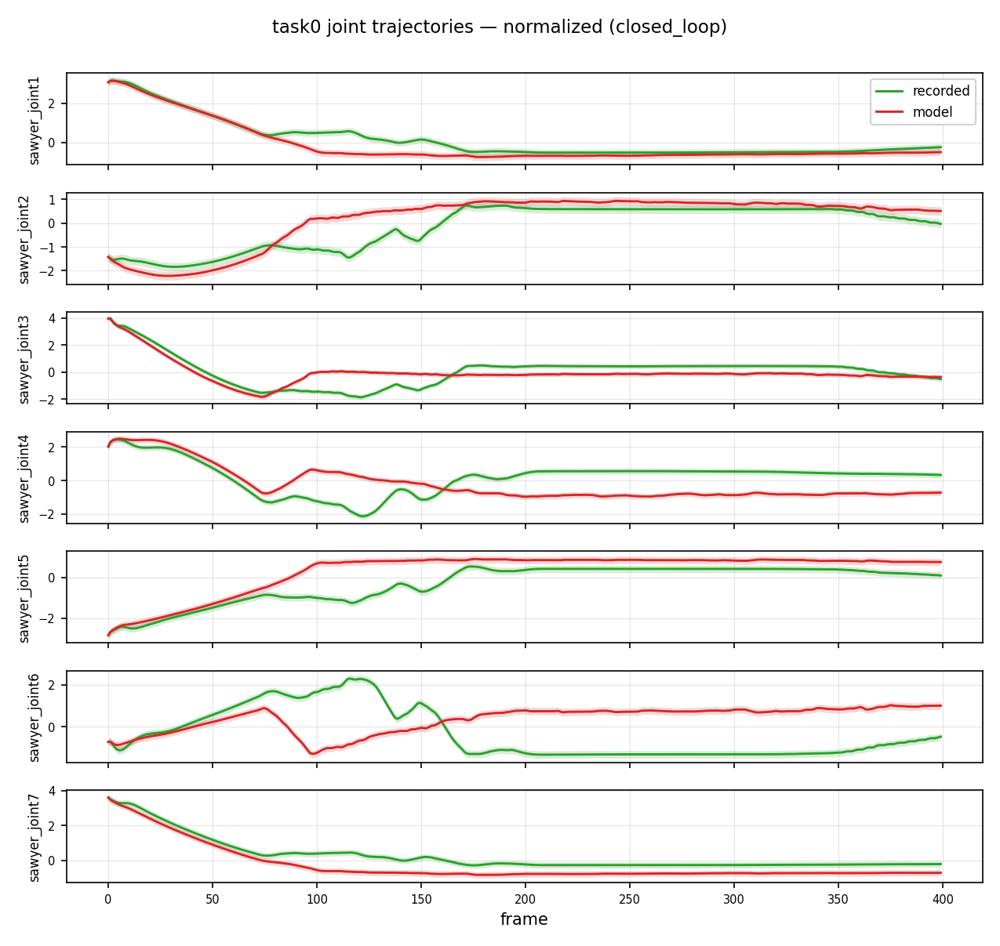
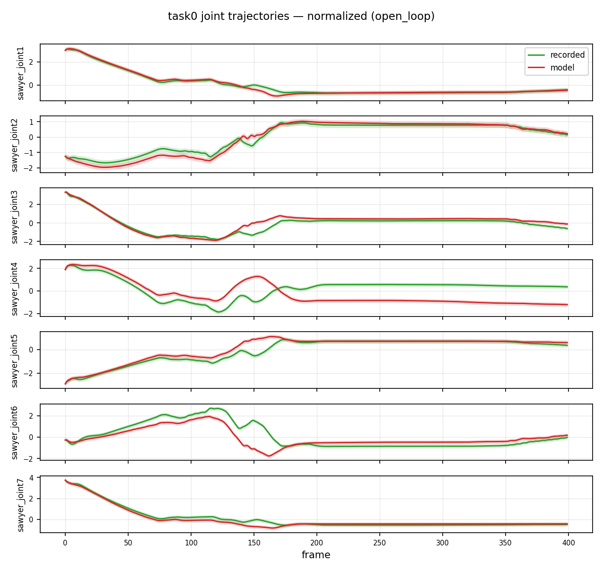
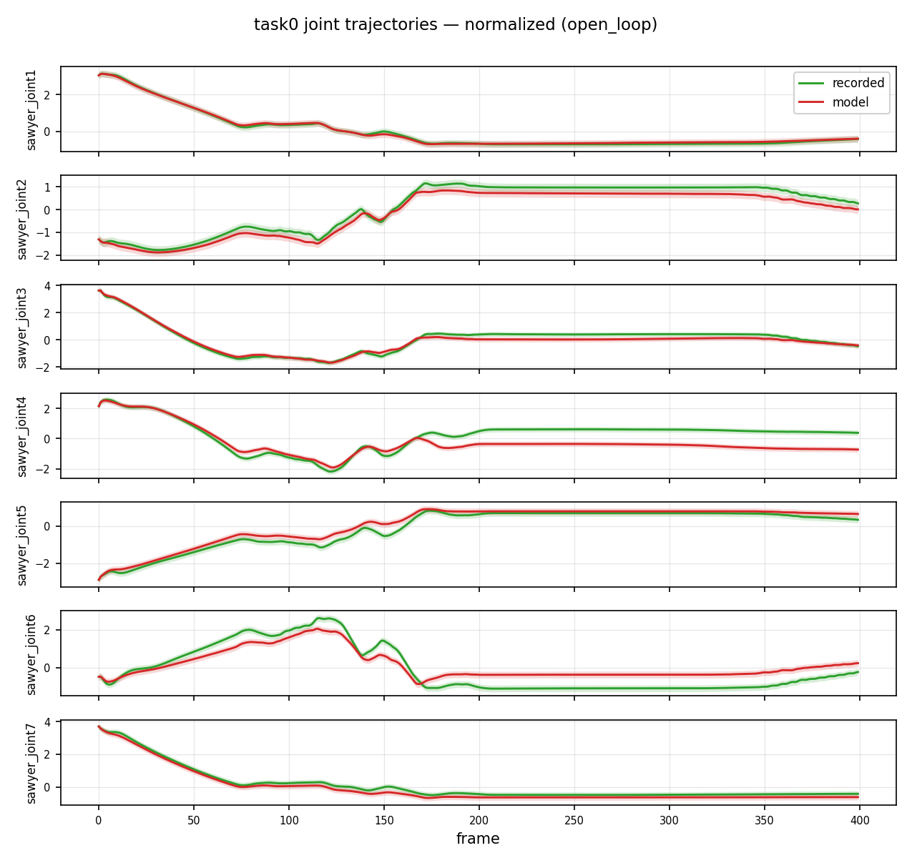
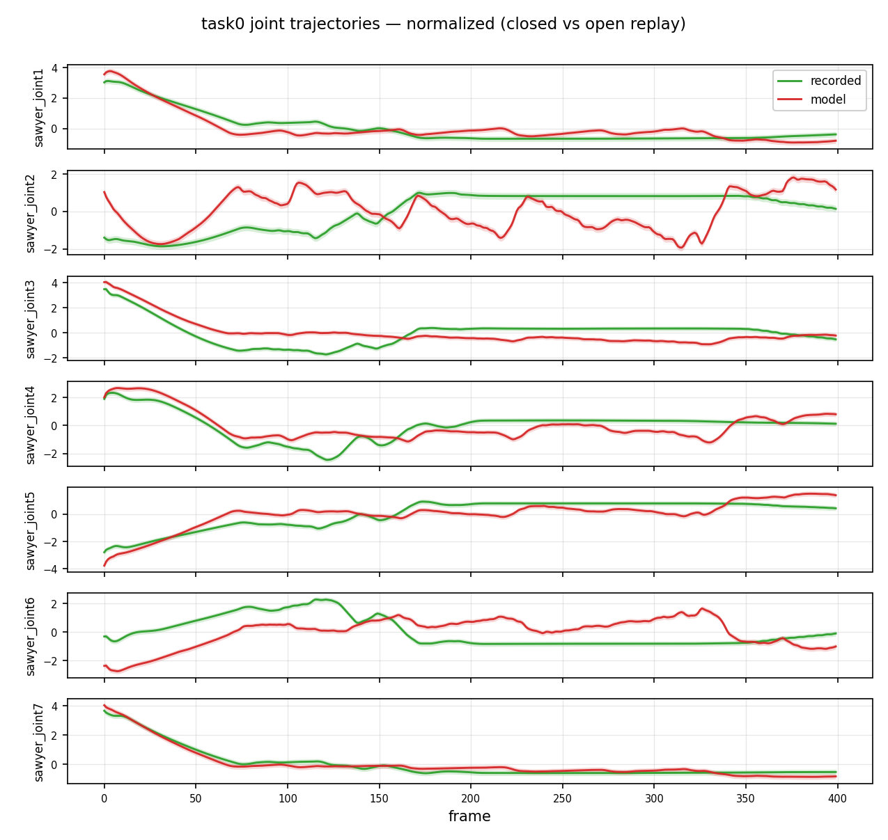
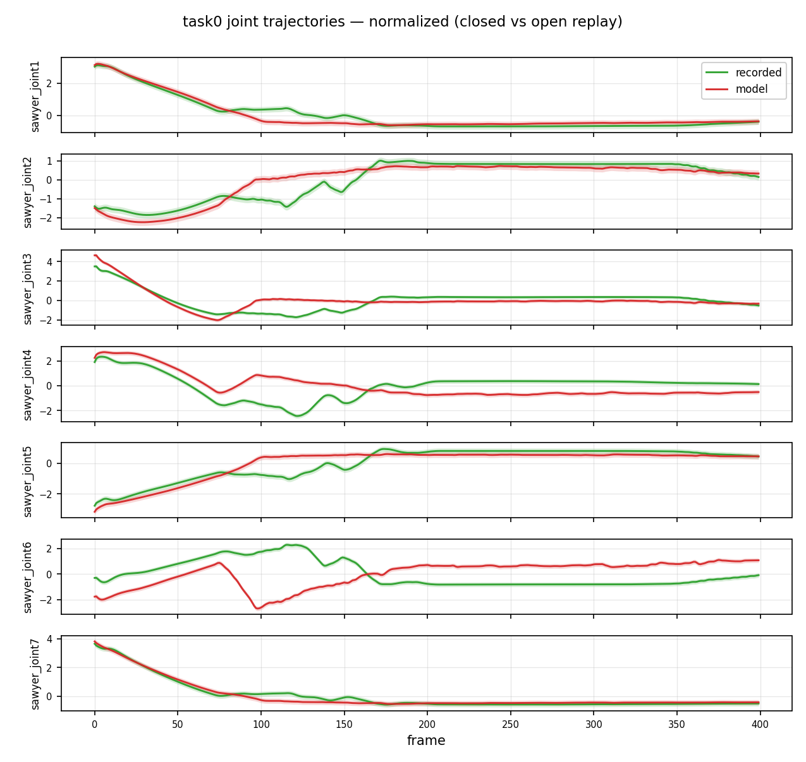

clean50 smoke — デモ vs ポリシー
同じ clean50 デモ ep0 で、Full FT（s10000·effbs4）と FullLoRA の teacher-force / open-loop / closed-loop を比較。評価は max1200 成功ではなく、 「どこでデモから外れるか」の診断図。生成: 2026-09-28。
読みどころ: デモ再生（open-loop）は健全。
Full FT はデモ状態ではそこそこ合うが、a3–a5 にゴミ出力があり、
closed-loop は 接近後〜掴み付近（〜frame 80–150）で外れる。
FullLoRA の方が閉ループ誤差が小さく、eval の near50/grasp18 vs near50/grasp0 と整合。
数値サマリ（ep0）
| 項目 | Full FT | FullLoRA |
|---|---|---|
| verdict | train_ok · openloop_ok · closedloop_weak | open_and_closed_look_ok_on_this_episode |
| teacher-force action L2 | 0.204 | 0.125 |
| open-loop 再生 EEF 誤差 | 0.0 | 0.0 |
| closed vs open EEF 誤差 | 0.120 | 0.048 |
| 参照 eval（50 trial） | near 50/50 · grasp 0/50 · success 0% | near 50/50 · grasp 18/50 · success 8% |
図が示す異常:
(1) デモでほぼ 0 の回転系（a3–a5）に Full FT がノイズを出す。
(2) closed-loop で序盤は追従するが掴み前後から赤が緑から離れる。
→ 失敗デモ学習ではなく、Full FT の掴み周りの閉ループ不安定が主因候補。
1. teacher-force（デモ観測 → モデル action）
緑=デモ action · 赤=モデル。デモ状態での模倣精度。
Full FT a3–a5 に大きなノイズ

a0–a2・a6 は追従。a3–a5 はデモ≈0 なのにモデルが激しく動く。
FullLoRA a4/a5 はほぼ 0

全体の L2 が小さい。a3 にノイズはあるが Full FT より軽い。
2. EEF xyz（デモ / open-loop 再生 / closed-loop）
青=デモ状態 · 緑=デモ action 再生 · 赤=閉ループポリシー。
Full FT

緑≈青（再生OK）。赤は x/z で大きく外れる。
FullLoRA

赤のずれは Full FT より小さい（mean 0.048）。
3. closed-loop 関節
本番と同じ閉ループ。接近後に赤が止まる／外れるかを見る。
Full FT

〜100–150 frame まで追従 → 以降 joint1–6 が大きく乖離。
FullLoRA

序盤は近い。後半も外れるが EEF 誤差は Full FT より小さい。
4. 参考: open-loop joints / closed vs open
Full FT · open-loop joints

FullLoRA · open-loop joints

Full FT · closed vs open

FullLoRA · closed vs open
